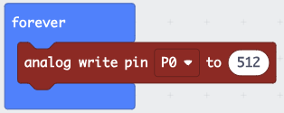

Voltage and PWM
What Is a Signal?
To control motors, we need to generate signals. A “signal” is an electrical impulse that conveys information.
Imagine that you are plugging in a lamp, and the lamp switch is on. When you plug it in, the light turns on. Then you unplug it and the light goes out.
If you have a neighbor who knows Morse code, you could send a message this way. You plug the light in sometimes for a short time, or sometimes for a long time. If “-” means you leave the light plugged in for a long time (1 second) and “.” means you leave it plugged in for a short time (1/2 second), you can send this message by plugging and unplugging:
.-.. . - .----. ... /
.--. .-.. .- -.-- /
-..- -... --- -..- .-.-.- /
-... .-. .. -. --./
- .- -.- .. ... .-.-.- /
A few minutes later, your friend arrives at your house with your favorite snack.
Cut and paste the Morse code into the Morse Code Translator to decode the message.
Voltage
When you plugged the light into the socket, you produced a voltage at the light bulb. When you unplugged it, you removed the voltage. Voltage is like water pressure in a hose, but with electrons instead of water. A lot of electronics use voltage to convey information, just like you did when you sent the message to your friend with the light.
That is what we are going to do now: change the voltage on a wire to send a signal.
Connecting Power
Before we hook up some motors, we need to understand a bit about electrical power.
When you are connecting circuits together, you will need to not only connect the signals, but also supply power for running the circuit. Some circuits, such as the Micro:bit, get their power from the USB connection, but other circuits will need to be connected to a power line.

There are several types of connections we will need:
- Positive power — often marked with a “+” or “Vcc.” The color is usually red. (However, in this kit, our power supply wire is white.)
- Negative power — often marked with a “-.” The color is usually black. It is often connected to ground.
- Ground — a neutral wire that always has 0 volts. It is labeled “G” or “GND” and its color is green. It is often connected to the power supply negative.
For the types of circuits we will work on, the negative is always connected to ground. Because ground and negative are always connected, the color for these connections is black, not green.
Writing the Analog Write Program
Using the MakeCode Editor, write this program. If you are still editing the old program, click to go back to the main screen, then click + New Project to start a new project. Call the project something like “Analog Write” or “Signals.”
The analog write block is in the Advanced » Pins section of the block menu.

Hardware Setup
Driving a motor requires a lot of power, more than the Micro:bit can supply through its pins. So we will attach a breakout board that has an extra power supply. This board requires another USB port. When these parts are assembled, it will look like this:

Notice that the program says it will write to “Pin P0.” The pin “P0” is the yellow pin labeled “0” on the breakout board, in the upper left. The yellow pins are the signal pins. On the top of the row, they are labeled with “S” for signal.

Next to the yellow signal pins are the red power pins. This row is labeled on the top with “V1” on the left and “V2” on the right. The two labels exist because these power rails can be set to different voltages. Look in the lower right for six pins and two yellow jumpers with “V1,” “V2,” “5V,” and “3V3” printed around them. You can move the jumpers to make V1 and V2 either 5 volts or 3.3 volts. Your board should be set to 5V.
Troubleshooting
- Breakout board not powering on: Make sure the long USB cable is plugged into both the breakout board and a USB port on your computer (or a USB power adapter).
- No signal on P0: Double-check that your analog write program is downloaded and running. You should see the program in the MakeCode simulator before downloading.
Challenge
Before connecting the oscilloscope, predict what value you would use in analog write to produce a 25% duty cycle. What about 75%? Write down your predictions.